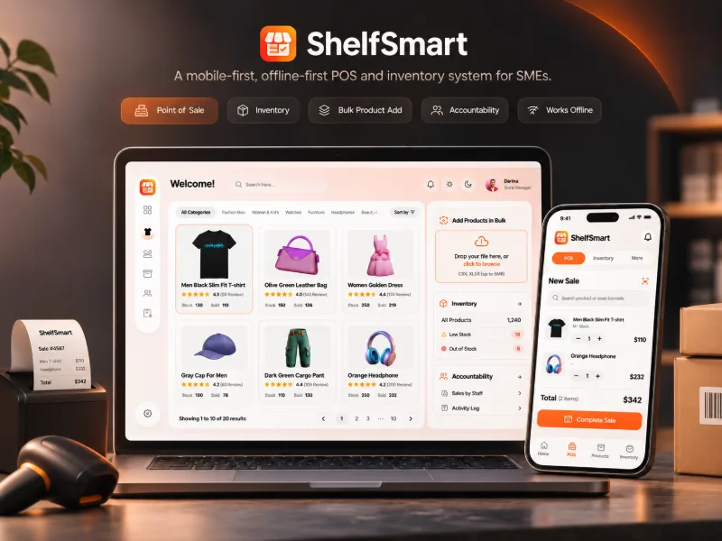

The sale has to survive a dropped connection
ShelfSmart is the starting point for an offline design exercise: save the sale locally, retry with the same ID, and show the cashier what’s pending.

At a busy counter, a spinning loader is not a plan when the network disappears. A cashier may still need to record a cash sale, keep the queue moving and know whether the record has reached the server.
1. Separate a sale from payment confirmation
A recorded cash sale and an electronically verified payment are different jobs. For this design exercise, let the cashier record a cash sale while offline. Keep a payment that needs remote confirmation in a separate state; do not display it as paid just because the customer showed a screenshot.
Show which sales are saved on the device and which the server has acknowledged. Persist the sale and the instruction to sync it in one local transaction. In SQLite, a transaction is atomic: either the writes commit together or they do not. Without that boundary, a crash could leave a sale with no sync job, or a sync job pointing to a sale that was never saved.
2. Save the sale and sync job together
Use a local outbox or pending-operations table. The sale record and its outbox entry should be committed together. After a restart, the app reads the pending work from storage instead of relying on an in-memory queue that disappeared when the process closed.
3. Make retries safe
Suppose the server records the sale, but the acknowledgement is lost. The phone sees a timeout. If it retries with a new ID, the server may create a second sale. Assign a stable operation ID when the sale is first created and reuse it for every retry of that same operation.
AWS describes idempotent APIs that remember a client-supplied request token with the operation. Store enough request information to detect when the same token is reused for a different intent; that should be rejected rather than silently treated as the original sale. A useful cashier-facing state model is Saved on this device, Synced and Needs attention.
4. Treat stock as a reconciliation problem
Offline persistence and stock reconciliation are not the same problem. Firestore documents last-write-wins behaviour when multiple offline changes affect the same document. That may be acceptable for a simple text edit; it is not a complete stock policy. If two tills sell the last item while disconnected, both sales may have physically happened.
One safer design records inventory movements separately and flags a discrepancy for review. The shop owner still needs to decide how to handle overselling, refunds or a stock correction. Do not silently erase a sale to make the number look tidy.
Test before trusting the till
- Record a cash sale in airplane mode.
- Close and reopen the app; confirm the sale is still visible.
- Reconnect, then simulate a lost sync acknowledgement.
- Retry and verify there is one sale and one stock movement.
- Repeat with two terminals selling the last item.